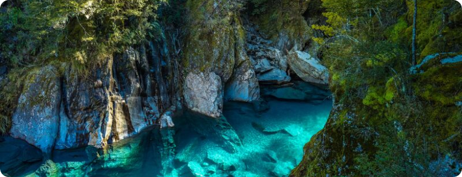

South Island
The South Island of New Zealand is renowned for its mountains, lakes and glaciers. The Southern Alps, home to 3,724m-high Aoraki Mt. Cook, run along the entire length of the island. In the southwest is Fiordland National Park, with steep-sided Milford Sound.
In the north is Abel Tasman National Park, known for its trails and ocean kayaking. Queenstown is famed for adventure sports like bungee jumping and skiing.
Natural geographic features
Hawaii
The South Island has 15 named maritime fiords which are all located in the southwest of the island in a mountainous area known as Fiordland. The spelling 'fiord' is used in New Zealand rather than 'fjord', although all the maritime fiords use the word Sound in their name instead.
A number of lakes in the Fiordland and Otago regions also fill glacial valleys. Lake Te Anau has three western arms which are fiords (and are named so). Lake McKerrow / Whakatipu Waitai to the north of Milford Sound / Piopiotahi is a fiord with a silted-up mouth. Lake Wakatipu fills a large glacial valley, as do lakes Hakapoua, Poteriteri, Monowai and Hauroko in the far south of Fiordland. Lake Manapouri has fiords as its west, north and south arms.


Most of New Zealand's glaciers are in the South Island. They are generally found in the Southern Alps near the Main Divide.
An inventory of South Island glaciers during the 1980s indicated there were about 3,155 glaciers with an area of at least one hectare (2.5 acres).[60] About a sixth of these glaciers covered more than 10 hectares. These include the Fox and Franz Josef glaciers on the West Coast, and the Haupapa / Tasman, Hooker, Mueller and Murchison glaciers in the east.
Other Destinations
The island of Maui
Hawaii
The island of Maui
Hawaii
The island of Maui
Hawaii